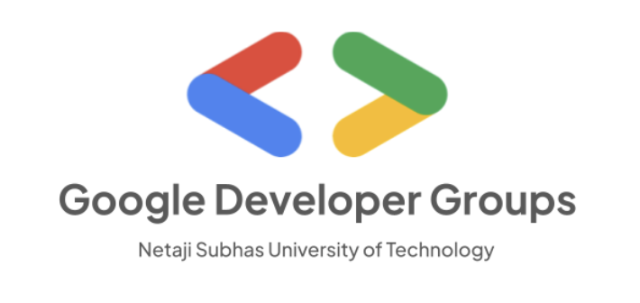
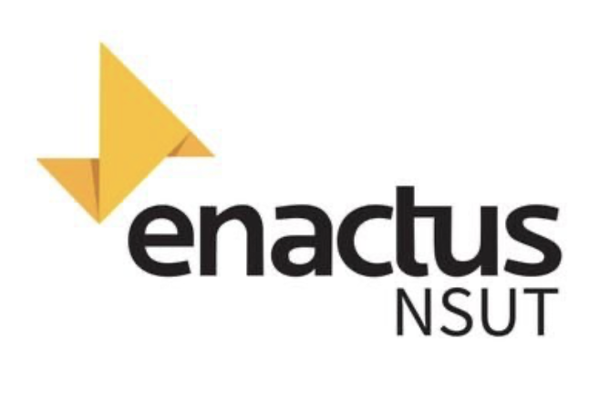
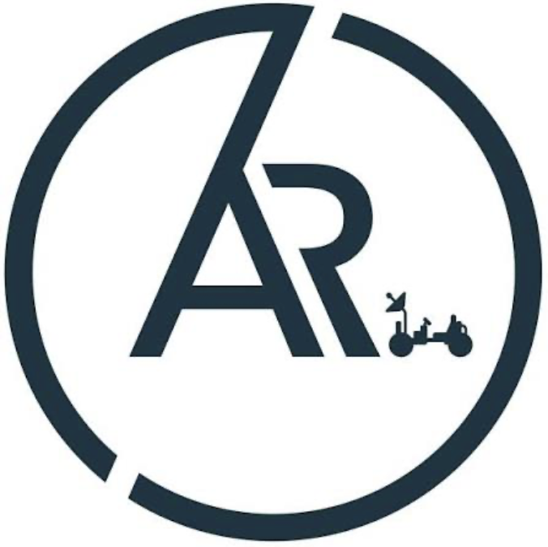
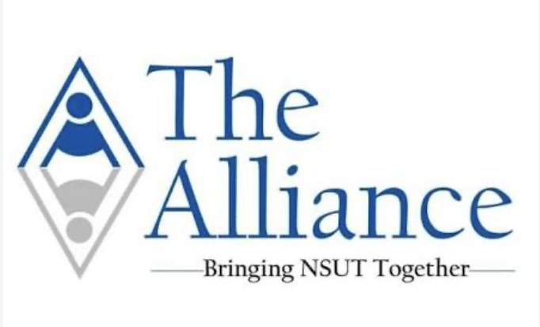
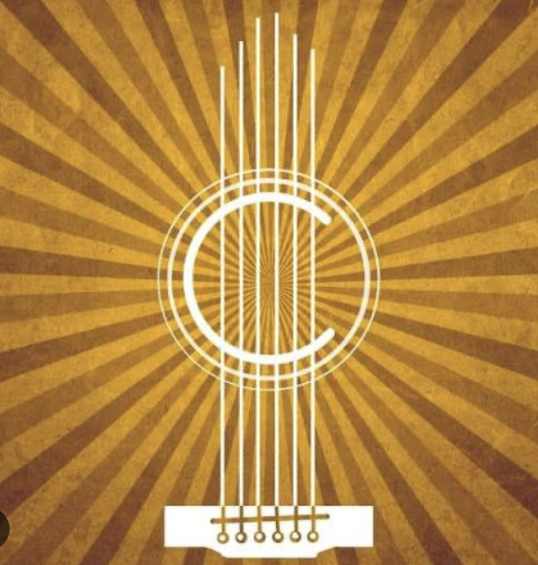

NETAJI SUBHAS
UNIVERSITY
OF
TECHNOLOGY










"Don't just get a degree—build a community. Join a society, find your people, and make your college years unforgettable."
Why join Societies?
- Skill Development: You practice real-world tasks like event planning, public speaking, budgeting, and teamwork.
- Networking and Exposure: You meet like-minded peers, seniors, and industry professionals.
- Resume Building: Active participation and leadership roles showcase your initiative to future employers.
- Personal Growth: Stepping out of your comfort zone builds self-awareness and emotional resilience.
Things to Keep in Mind
- Time Management: Societies can demand significant time commitments, especially during fest seasons.
- Choose with Purpose: Pick one or two societies you are genuinely passionate about to avoid burnout.
SOCIETIES
General Recruitment Rounds
Generally Recruitment process consists of following phases. No.of Rounds completely depends on society they may vary society to society.
(Round 1 results will be announced and you will be contacted by society members about further rounds)
(Round 2 results will be announced and you will be informed about further processing)
Google Developer Group
Learn. Build. Grow.
Technical SocietyEnactus NSUT
A HEAD for Business. A Heart for the World
Social EntrepreneurshipCrosslink
The Student Relations & Public Relations Cell
PR SocietyCrescendo
The Music Society of NSUT
Cultural SocietyARES Robotics
Engineering Intelligent Machines
Technical SocietyAlliance
The Newspaper and Publication Society
Media SocietyFAQ
Can I join multiple societies?
Yes, you can join as many college societies as you want.
What to Consider Before Joining Multiple Groups
- Time commitment: Active groups like drama clubs, competitive teams, or dance crews demand heavy schedules. Most students find it hard to actively manage more than two or three groups at once.
- Leadership rules: While you can be a general member of many clubs, some student unions or housing boards restrict you from holding top executive roles (like president or treasurer) in multiple places at the same time.
- Selection processes: Some competitive or niche groups require auditions or interviews, so your membership depends on getting selected rather than just signing up.
Is prior experience required?
No, prior experience is generally not required for most societies. Most student groups are designed to help you learn new skills and meet people.
Are there membership fees?
Most societies are free, but some charge a membership fee.
What is the weekly time commitment?
Most committees require 5 to 10 hours per week, which spikes drastically right before a major department fest or event.
Are there specific departments I can apply to?
Yes, you can usually choose between sub-teams like Logistics, Sponsorship/Corporate Relations, Public Relations (PR), Design & Media, or Content Writing.
Do I need specific skills for tech or design roles?
For design teams, prior knowledge of tools like Adobe Photoshop or Canva is helpful. For content or logistics, strong communication is usually enough.
⚠️ Must check the official pages of the societies in which you are planning to apply for any other FAQs.
Annual Event
POC